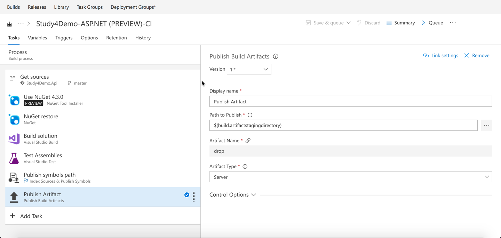
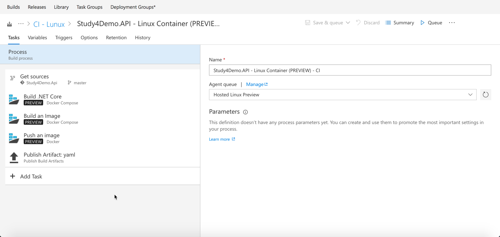
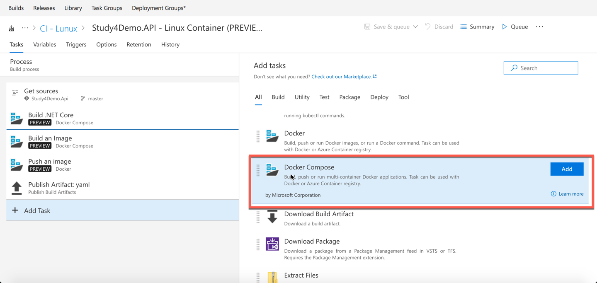
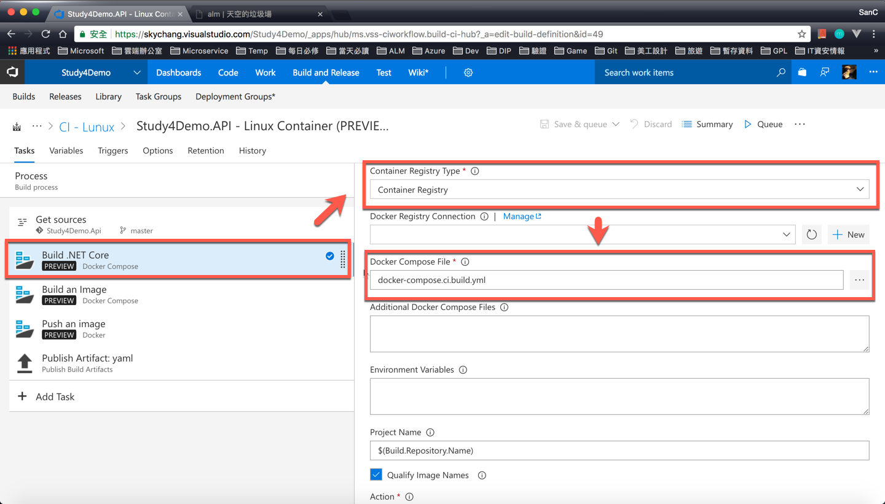
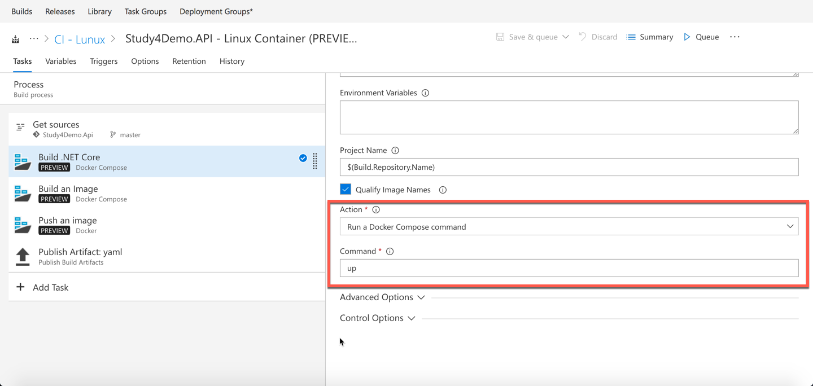
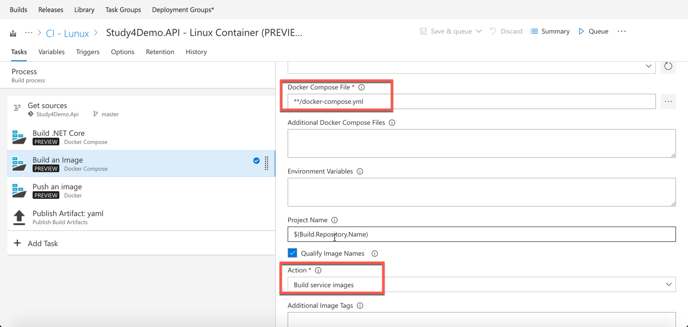
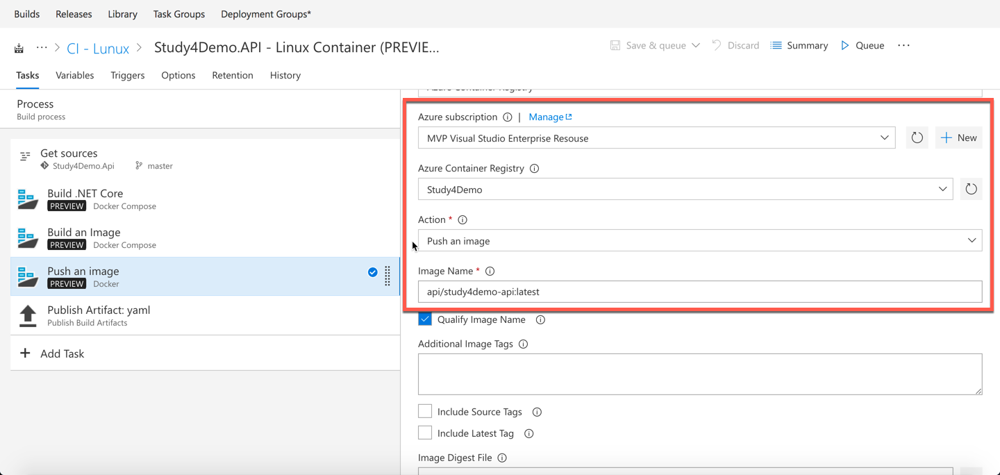
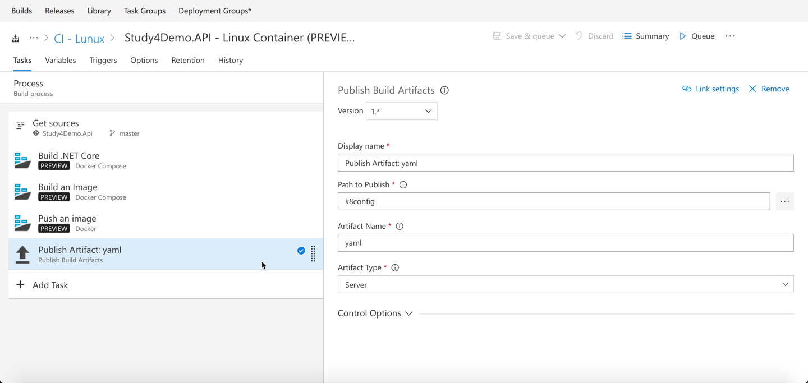

前言
在 2015 年底左右，因為 VSTS 的 Build 和 Release 改得太好用了，所以那時候寫了一些文章，而快過了兩年，技術的腳步一直都沒停過：因 Docker Container 的起來，再加上 MS 也開始支援 Windows Container ，所以對於整個 App 的開發，也逐漸朝向 Container 的技術進行發展：既然開發要 App ，那自然而然，整個 Build 的流程，也要跟上時代：所以這篇，我們來談談透過 VSTS Auto Build Container ( CI 持續整合 )
在開始前
首先，我們這篇文章當然不會再談什麼是 CI 了，更不會重頭開始講解 VSTS 使用 Build 的過程：而希望放在談論 CI 和 Container 大致上會怎樣做。在開始前，讓我們先回憶一下，在一兩年前，沒有 Container 的 CI 時代，大家是怎樣進行 CI 這個動作。
ASP.NET 與 CI
其實大致上就和下圖一樣：下面是一個很典型的 ASP.NET Core 的例子，第一步透過取得 Source 後，然後透過 NuGet 取得套件，然後進行 Build 的動作，Build 完後，透過 Auto Test Run Unit Test：當然，如果要串後面的 Release，那可能還要把編譯好的檔案，放到指定位置等等。

Container 與 CI
那如果是 Container 呢？ 當然，也可以執行上面的步驟，然後再透過 Docker Build 的方式，打包成 image 檔案，最後在上傳到 Repo 去：其實現在的文章多半是透過這種方式來處理；因為這種方式最容易理解，每個步驟也很單純。
而小弟這篇文章，則會用另外一種方式來處理，我們先看看下圖：我們從下圖可以發現，這邊第一步是 Build .NET Core，第二步是 Build Image ，第三步是 Push Image：基本上的步驟，和前面說到的都差不多，只是我們把 Get Source、Get NuGet Package、Build 等等的步驟，通通整合到第一個步驟 Build .NET Core 裡面去了。

從上圖可以看到，其實這三個都是 Docker 的命令 ( Docker Cli )，但大家可能會有一個疑惑，疑？為什麼 Docker 命令可以 Build .NET Core ? 又是怎樣一步完成多個步驟。
VS 產生的 Docker-Compose File
其實這種做法，並不是小弟自己想出來的，如果大家有玩過 Visual Studio 2017 和 Docker，我們使用 Visual Studio 2017 產生的 Docker File，其實是三個 Docker Compose File，如下圖。( 因小弟在 MacOS 下工作，請原諒小弟沒有截 VS 2017 的圖….，就讓小弟直接用 VS Code 講解吧。 )
這三個檔案分別
- docker-compose.ci.build.yml
- docker-compose.override.yml
- docker-compose.yml
當然，docker-compose.yml 就是定義了要怎樣跑出 Container，而共用的設定則會放到 docker-compose.override.yml。
而如果我們仔細看 VS 2017 使用 Docker Build 的 Log，其實我們可以發現 docker-compose.ci.build.yml 根本沒用到…. ( 如果小弟眼殘了請多見諒。 )
那 docker-compose.ci.build.yml 是做什麼的呢?
docker-compose.ci.build.yml
docker-compose.ci.build.yml，看名子就知道，一定是和 ci build 有關啊！！，我們可以打開內容來看看。
1 | version: '3' |
從裡面其實就可以看到，他用的是 image，是 aspnetcore-build，換言之，其實這個 docker-compose 就是提供 Build 的檔案：我們繼續看下去，他的 volumes 參數，會建立一個 src 的目錄，並且把目前我們 Local 的資料掛載過去：然後進入 src 裡面，並執行很長的一串命令。
但其實這個命令就是
1 | dotnet restore ./Study4Demo.Api.sln |
更簡單的說法，就是，先 restore，並且透過 publish ( 包含 build )，將產生出來的檔案 ( Release Mode )，放到 obj/docker/publish 底下。
而又因為這個目錄是透過 volumes 掛載進來的，所以等同執行完 publish 後，本機的目錄就會有 obj/docker/publish 這些編譯好的檔案。
說得更簡單一點，就是透過這個 Container 執行 Build 的動作，並透過掛載本機開發目錄這個技巧，又把編譯好的檔案放回本機去。
進行實際設定 - Build .NET Core
知道原理之後，我們就可以開始進行設定:這邊我們主要使用的 Task ，自然就是 Docker-compose，而非 Docker，原因也很簡單了，畢竟我們都準備好Docker-Compose 的設定了。（ 我們一共要有三個 Docker-Compose Task 來 Build、Create Image 和 Push )

這邊的設定還滿簡單的，除了名稱別忘了取響亮一點外，Container Registry Type 我們要選擇 Container Registry，表示從 Docker Hub 下載：當然如果覺得這樣耗費時間，也可以改用 Azure Container Registry，但別忘了要自己把 Build 的 Image 放上去就是了….
Docker Compose File 自然就是選擇剛剛的 yml 檔案嚕。

接下來，我們要 Run Docker Compose Command，而這個命令就是 up，透過此命令可以把 Container run 起來，並且執行。

進行實際設定 - Build an Image
接下來，就是要 Build Image：這邊比較簡單，主要選擇主要的 Docker-Compose 檔案，並且選擇 Build Image。
Docker-Compose 的主要內容如下 ( Override 小弟就不列了. )
1 | version: '3' |
比較重要的為產生的 image 名稱，因為我們未來要放到 Azure Container Registry，所以勢必前面要加上特定的名稱 study4demo.azurecr.io，而中間的 api 是小弟故意加的，用來區分為後台的 Image，最後每次 Build 完後的版本為預設的 latest。

進行實際設定 - Publish an Image
接下來，就是要 Publish Image：再放上去之前，記得要先去 Azure Containere Registry 花錢開啟 Container Repo 服務，當然，也必須先把 VSTS 與 Azure 關聯，完成之後，主要是在下面，Actuon 選擇 Push an image，而你要 push 的 image 名稱為 api/study4demo-api:latest，然後 Qualify Image Name 要打勾，這樣他會自動幫我們帶 study4demo.azurecr.io 這個名稱。

如果要接 Release
如果要接 Release，我們也必須先把 config 放到特定的位置，這邊小弟因為要 Release 到 K8S，所以設定檔是 K8S。

後記
基本上，兩種方式都有各自的好，但對小弟來說，小弟比較喜歡透過 Container 來進行 Build，原因是因為這樣就可以無視 Build Server 上的 .NET Core 版本：甚至也可以透過同樣手段來進行 Node.js、npm 等的 Build：但這種方式也有缺點，如果 image 放在 Docker Hub 的情況下，拉回來的速度還是有點落差。
最後，大家喜歡用哪一種方式，就看大家習慣吧！～